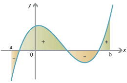

Одређени интеграл је концепт у математици који се широко примењује у разним областима. Он омогућава израчунавање површине испод криве, дужине криве, волумена ротационог тела и решавање многих других проблема који се сусрећу у математичкој анализи, физици, инжењерингу и економији и другим наукама. Одређени интеграл се користи за израчунавање вредности функције на одређеном интервалу.
Овај интеграл се често користи за израчунавање површине испод криве функције. На пример, можемо користити одређени интеграл да бисмо израчунали површину фигура правоугаоника, троугла или елипсе. Такође се може користити за израчунавање површине испод криве функције која није елементарна функција.
Одређени интеграл има примену у рачунању дужине криве. Помоћу овог интеграла можемо израчунати укупну дужину криве линије која се не може једноставно изразити помоћу основних геометријских формула. Ово је посебно корисно у физици и инжењерингу, где се често сусрећемо са кривим линијама као што су путање пројектила или криве у електромагнетној теорији.
Друга важна примена одређеног интеграла је у израчунавању запремине ротационих тела. Користећи овај интеграл, можемо израчунати запремину ротационих фигура које настају ротирањем одређене криве око одређене осе. Ово је корисно у физици, посебно при проучавању ротационих тела попут ваљка или купа. Осим наведених примера, одређени интеграл се користи у многим другим областима.
У економији се користи за израчунавање укупних прихода или укупне потрошње на основу функција. У физици се користи за израчунавање масе, центра масе и момента инерције. Укратко, примена одређеног интеграла је широка и разноврсна. Овај математички концепт омогућава нам да решимо проблеме везане за површине, дужине, запремине и многе друге квантитативне карактеристике различитих облика. Без њега, многе од ових проблема би биле тешко или немогуће решити на прецизан начин.
